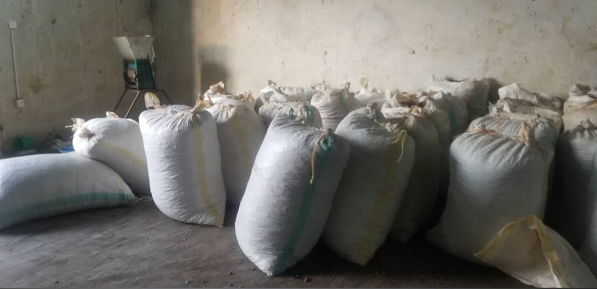
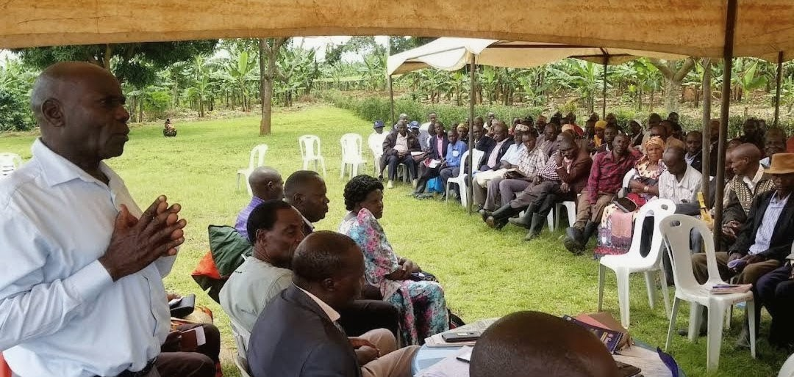

A Glimpse of BULMUCOS

Community funded
Some of the Cooperative's coffee bags comtributed by memebers to run the day to day activities of the cooperative.

Internationally Eyed
Financed by UNDP and the Government of Uganda through UGACOF to build a solar dryer for our farmers.

Extension services
Meeting with community members to discuss about circular agriculture.

Solar Dryer
For members' produce to reduce post harvest losses due to weather conditions and improve quality of the produce by avoiding drying produce on the ground.